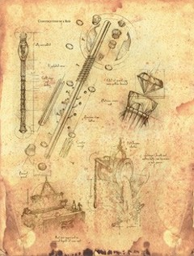
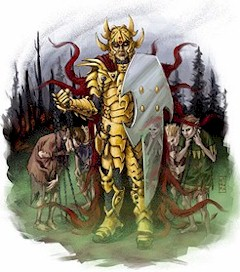
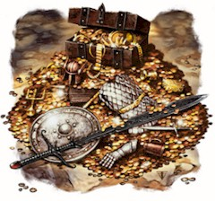

Wizards, with their surplus of item creation and metamagic bonus feats, are the most likely to stare down expectations when monster loot fails to deliver that "perfectly convenient" piece of treasure (tailored for each party member). While player characters typically amass and spend gold without reservation, no adventurer is willingly parted from their XP. A wizard, with the right item creation feat and prerequisite spells, can potentially create any magic item desired by their companions. Expecting them to continually pay the XP bill, however, is basically like asking, "Do you mind lagging behind the average party level?" It's understandable that some wizards avoid certain item creation feats, believing that the glut of requests asked of them by taking (for instance) Craft Magic Arms and Armor will detrimentally impact their progress. As such, wizards are often likely to choose Craft Staff or Craft Wand, to avoid being put into an obligatory position (and, of course, because such feats are genuinely useful for their profession). Yet wizards might not feel so put upon taking Forge Ring, Craft Wondrous Item, or even Craft Magic Arms and Armor if there was a straightforward way to transfer the XP costs onto their intended owners. For example, if the party's fighter pays the 720 XP cost for their own +2 keen bastard sword, the wizard could still make a +1 returning spell storing dagger for themselves without falling behind in level. Moreover, weapons, items and rings can be imbued with persistent or renewable effects, unlike typical spell-trigger items that are consumed or run out of charges; to elaborate, by spending an extra 2,000 gp and 80 XP, the abovementioned dagger can be made to permanently detect magic at will (see Table 7-33: Estimating Magic Item Gold Piece Values, page 285 of the Dungeon Master's Guide). The following article explores several game options for transferring XP costs when creating magic items. While it may be easy enough to simply say "the fighter pays the XP cost for their own sword" a few additional considerations are discussed below. Requirements for Transferring XP
Rule #1: The first rule of transferring XP to create a magic item is that the creature must be willing to participate in the exchange. Any attempt at coercion, through magical or mundane means, to transfer XP will automatically fail. The XP cost for creating a magic item can only be freely transferred in complete awareness of the consequences, which also necessitates a minimum Intelligence of 3. Rule #2: Furthermore, a creature cannot transfer so much XP toward creating a magic item as to lose a level. However, such a creature may, upon gaining enough XP to attain a new level, transfer this XP toward creating a magic item rather than keeping them and advancing a level. Rule #3: Lastly, a creature can only transfer XP toward creating a magic item with which they are proficient (regarding armors, shields, and weapons), capable of activating (in the case of wands, and other spell trigger items[1]), or capable of using (if restricted by ability score, alignment, class feature, or race [1]). [1] A creature can attempt to emulate these qualities with a Use Magic Device check in order to transfer XP. Compensation for Transferring XP If you are commissioning a magic item for which you are willing to transfer the XP cost, a discount of 5 gp per 1 XP is subtracted from the final market price. Note: Magic items based on spells with XP components increase the market price by 5 gp per 1 XP (see Table 7-33: Estimating Magic Item Gold Piece Values, page 285 of the Dungeon Master's Guide). The only time NPCs are willing to transfer the XP costs for creating magic items is when they are cohorts or followers of some member in the party, or the magic item is being made for their personal use (for example, when an NPC commissions a magic item). If an NPC is able and willing to transfer the XP cost for creating a magic item, the compensation for this service is 5 gp per 1 XP, paid in advance. While XP is an abstract concept to NPCs, this is the minimum amount that will be accepted. A greedy NPC who is "in character" will likely ask for even more gold, especially if they fulfill multiple requirements for transferring XP. Sharing the Transferred XP Costs
A creature that meets all requirements for transferring XP cost may transfer the full amount or a partial amount. Partial amounts typically range between 25%, 50%, and 75%, but can be any number of XP stipulated by the creature (essentially, until they say "when"). Up to five creatures can share the transferred XP cost of creating a magic item, split into equal or disproportionate amounts. Repairing Magic Items All the rules for creating magic items with transferred XP apply to repairing magic items as well. Methods of Transferring XP Below are three different methods of transferring XP to the creator of a magic item. Each approach is slightly different and requires various degrees of involvement. Spell This first method of transferring XP utilizes a universal spell available to all spellcasters. This method offers more security for the spellcaster than it does for the person transferring XP. TRANSFERENCE Wisps of ethereal light rise off the targeted creatures, consolidate into glowing orbs, and then streak toward the spellcaster, fusing with their body. This spell allows you to store a transfer of XP from one or more creatures (maximum five), but only for the purpose of constructing an agreed upon magic item. The XP gained from other creatures through this spell is not counted toward attaining a new level. Targeted creatures must agree to the focus component that will be used in creating the magic item before allowing this spell to be cast on them. Once the spell is cast, targeted creatures control how much XP to transfer. You cannot accept a transfer of more XP than is needed to construct the agreed upon magic item. All the requirements for transferring XP, compensating for XP, and sharing XP costs apply to the casting of this spell. If allowable changes are made that require more XP, you must provide that XP yourself or cast this spell again to store a transfer of more XP as needed. If allowable changes are made that require less XP, the difference is returned to the targeted creatures in proportionate amounts (as per their original contributions). If you start making a magic item that is not allowed by even one of the targeted creatures, all the transferred XP is immediately returned to those creatures. If you spend at least one day making the agreed upon magic item, the XP is consumed regardless of whether the magic item is completed or not. If you start working on a new magic item after spending at least one day making the agreed upon magic item, the XP is consumed and lost (as per the normal rules for creating magic items). Focus: The raw material of agreed upon magic item (for example, a cloak, sword, or wand). One Line: Univ Transference(F): Transfers XP from a creature to create an agreed upon magic item. Magic Item This second method of transferring XP relies on an inexpensive magic item that anybody can use. This method offers more security for the person transferring XP than it does for the creator of a magic item. Talisman of Transference A talisman of transference is a conduit through which XP can be transferred for the purposes of constructing an agreed upon magic item. Lore: These devices were designed to protect creatures that commissioned magic items from creators who spent their transferred XP and did not finish the contract or disappeared with the completed product (Gather Information DC 20 or Knowledge [arcana] DC 10). Description: A talisman of transference typically takes the shape of a bracer, periapt, or some other form of jewelry worn against the skin. Activation: As a standard action, a worn talisman of transference is brought into contact with the raw material of an agreed upon magic item (for example, a cloak, sword, or wand) before construction begins, with the wearer speaking the word "attach" to create a link. The worn talisman of transference is then brought into contact with the creator after at least one day (8 hours) has been spent working on the magic item (but usually upon completion), speaking the word "infuse" to complete the effect. A talisman of transference can only form a connection with one raw material at a time. Speaking the word "attach" while in contact with a new raw material erases the old link. Effect: A talisman of transference transfers XP from the wearer to the person who constructed the magic item, so long as the magic item was made from the original raw material to which this device was linked. The wearer can transfer the entire or partial amount, though the wearer cannot transfer more XP than was needed to construct the magic item. All the requirements for transferring XP, compensating for XP, and sharing XP costs apply to using this device. If the wearer refuses to transfer XP for the magic item, the creator can destroy the magic item, thereby regaining any XP that was invested. The monetary investment, however, is still lost. Aura/Caster Level: Faint universal. CL 1st. Ceremony Feat This third method of transferring XP is a feat taken by the magic item creator. This method offers nearly equal security for both the person transferring XP and the creator of a magic item, as both parties continually work together. Ritual Transference You can transfer the XP of other creatures into an agreed upon magic item and construct magic items with prerequisites that you do not meet. Prerequisites: Knowledge (arcana) or Knowledge (religion), any item creation feat. Benefit: You gain access to rituals based on your ranks in Knowledge (arcana) or Knowledge (religion). If you qualified for this feat with Knowledge (arcana), only magic items with arcane spell prerequisites can be constructed with the transfer ritual. If you qualified for this feat with Knowledge (religion), only magic items with divine spell prerequisites can be constructed with the transfer ritual. Transfer (Knowledge [arcana] 4 ranks or Knowledge [religion] 4 ranks): You can courier a transfer of XP from one or more creatures (maximum five) into an agreed upon magic item you are constructing. Any creatures participating in this ritual control how much XP to transfer. You cannot courier a transfer of more XP than is needed to construct the agreed upon magic item. All the requirements for transferring XP, compensating for XP, and sharing XP costs apply to participating in this ritual. If allowable changes are made that require more XP, you or the participating creatures must provide that XP as needed. If allowable changes are made that require less XP, the difference is returned to you or the participating creatures in proportionate amounts (as per their original contributions). If you start making a magic item that is not allowed by even one of the creatures participating in this ritual, all the transferred XP is returned to those creatures. If you spend at least one day making the agreed upon magic item, the XP is consumed regardless of whether the magic item is completed or not. If you start working on a new magic item after spending at least one day making the agreed upon magic item, the XP is consumed and lost (as per the normal rules for creating magic items). Any creatures participating in this ritual must be present while the magic item is being created (one day per 1,000 gp in the item's base price, 8 hours per day; potions always take just one day to make, regardless of cost). If any creatures participating in this ritual are not present, then no progress can be made toward the magic item that day. If any creature leaves before 8 hours per day has elapsed, no portion of that day counts toward the construction time. Coalesce (Knowledge [arcana] 8 ranks or Knowledge [religion] 8 ranks): You can rely on any creature participating in this ritual who transferred at least 50% of the XP cost to provide prerequisite spells for the agreed upon magic item. The creature must provide any material components or focuses the spells require, and must pay any XP costs required for the spells. The act of constructing the magic item triggers these spells, making them unavailable for casting during each day of the magic item's creation. Note: If you are commissioning the creation of a magic item from an NPC with this feat (for which you are providing spells), a discount consistent with your contribution and type of magic item is subtracted from the final market price (see Table 7-33: Estimating Magic Item Gold Piece Values, page 285 of the Dungeon Master's Guide).
Similarly, you can rely on any creature participating in this ritual who transferred at least 50% of the XP cost to provide ability score, alignment, character level, class level, class feature, race, or skill rank prerequisites for the agreed upon magic item. No discount is given for providing these qualities. You must always provide the caster level and item creation feat needed to make a magic item. Special: A character who meets the prerequisites automatically gains Ritual Transference as a bonus feat after constructing five talismans of transference. One Line:
About the Author Kolja Raven Liquette is perhaps best known for creating The Waking Lands website, but has also co-authored Races of the Dragon and Weapons of Legacy, in addition to providing material for Five Nations, the upcoming Complete Mage, and various articles and enhancements for the Wizards of the Coast website. | ||||||||||||
|
©1995-2006 Wizards of the Coast, Inc., a subsidiary of Hasbro, Inc. All Rights Reserved. | ||||||||||||